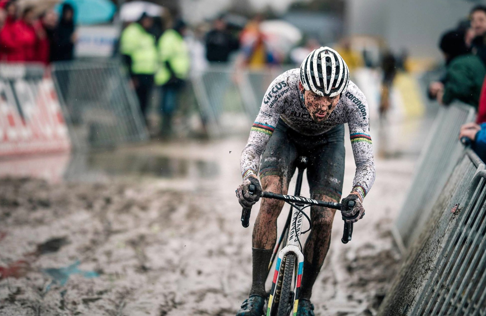

¿Qué es el Ciclocrós?
El ciclocrós es una disciplina del ciclismo que se practica en circuitos con obstáculos
naturales y artificiales. Los ciclistas deben desmontar y llevar la bicicleta en ciertos
tramos, lo que añade un elemento físico adicional al deporte.
|

Historia del Deporte
El ciclocrós se originó en Francia a principios del siglo XX como una forma para que los
ciclistas de ruta mantuvieran su condición física durante el invierno. Desde entonces,
ha evolucionado hasta convertirse en un deporte con campeonatos mundiales y una gran
base de seguidores.
|

Equipamiento Esencial
Para practicar ciclocrós se necesita una bicicleta específica, similar a una de carretera
pero con neumáticos más anchos y tacos, frenos más potentes y un cuadro más robusto para
soportar los impactos y el transporte a pie.
|